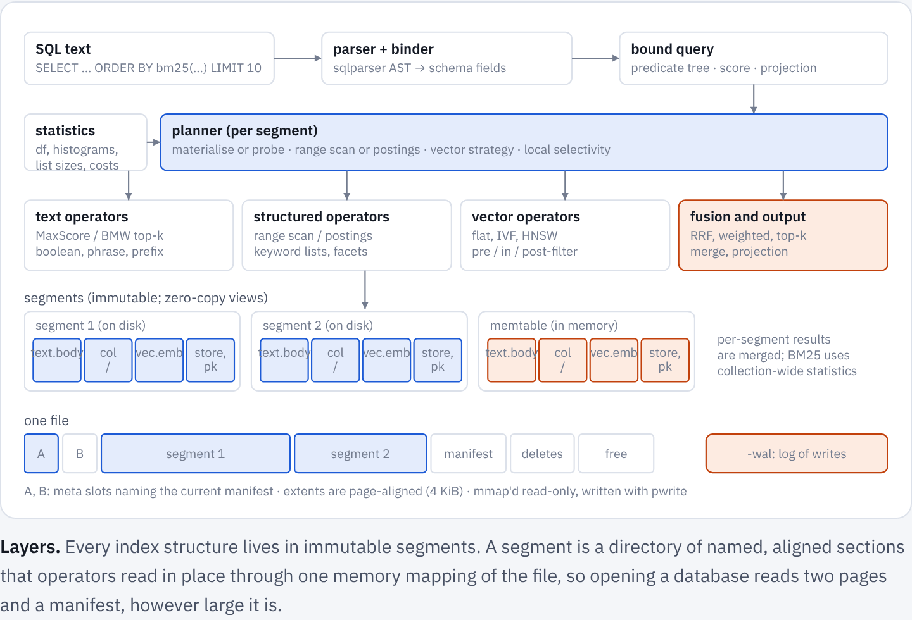
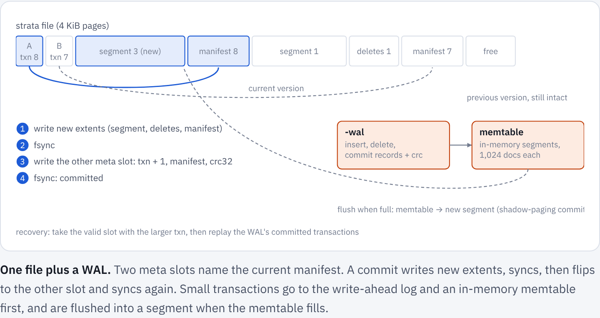
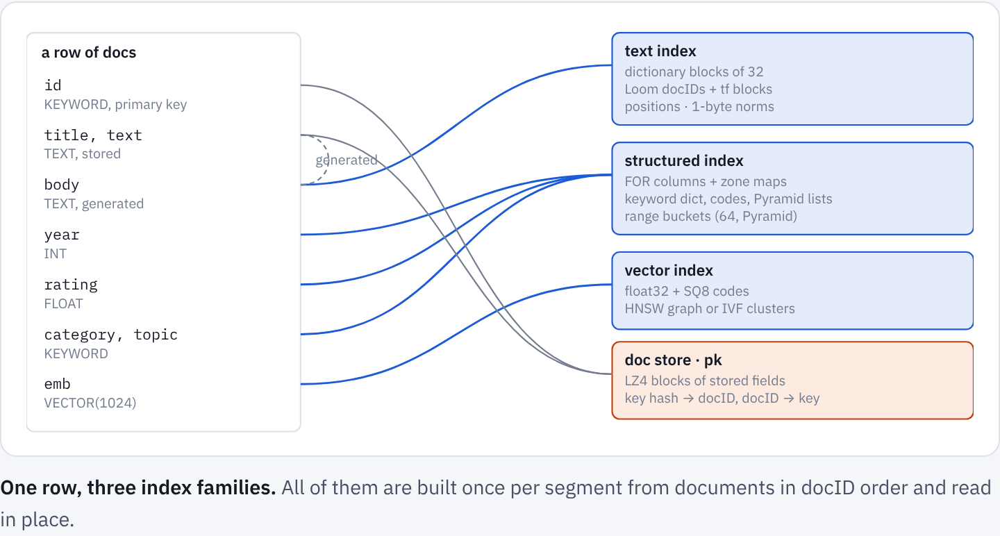
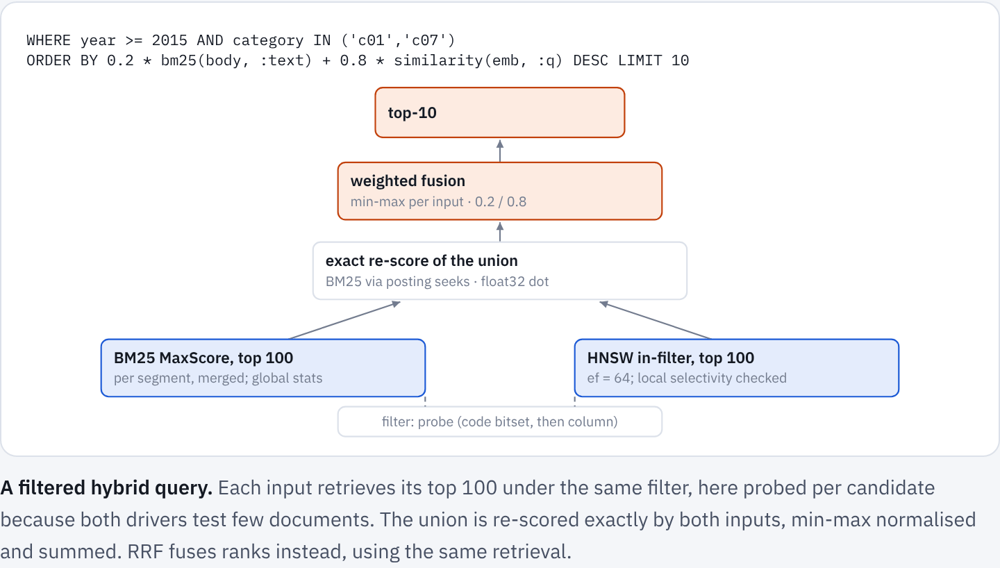

ChloeDB: design
Reference, rendered from docs/chloedb/index.md.
These docs describe release 0.3.3. The docs of main describe the code as it is now.
On this page
ChloeDB is to search what SQLite is to relational data: a library that keeps a whole database in one file, needs no server or configuration, gives ACID transactions, and is queried with SQL. Every table is indexed for full text (posting lists), structured columns (a columnar forward index) and vectors, rows can hold graph edges to other rows, and a cost-based planner combines all of it in one statement.
This page is the design: the file format, transactions, every index and the planner. To use ChloeDB, start with the README or Build an app.
Goals#
- Embedded and single-file. One
.chloedbfile plus a-walsidecar, like SQLite in WAL mode. Opening a database maps the file and loads nothing eagerly, so databases larger than RAM work and a cold open costs the same whatever the size. - ACID with snapshot isolation. One writer, any number of readers. Readers never block and always see a consistent snapshot; a crash at any point leaves the last committed state. Threads that write at once take turns, and those that wait share the next commit.
- SQL with search extensions.
SELECT … WHERE … ORDER BY … LIMIT,GROUP BYfor facets, plusMATCH(boolean full text),bm25(),similarity()anddistance()(vectors and learned sparse weights),rrf(), weighted sums and products (fusion and boosts),decay()(closeness to a value or a time) and graph traversal, andINSERT,UPDATEandDELETE. The query language page is the reference. - Index families, freely combined. Full text (BM25, boolean and phrase queries), structured fields (equality,
IN, ranges, facets) and vectors (approximate and exact nearest neighbours), in any combination: filtered vector search, filtered BM25, hybrid ranking, facets over any result. - Graphs over the same rows. A row can hold typed, weighted edges to other rows. Traversals, shortest paths and personalized PageRank run in the same statement as everything else (Graphs).
- Disk-aware. Every structure is read in place through
mmap, with no deserialisation, and laid out so that a query's I/O is proportional to its work.
One process writes a database at a time; other processes can read it while it is written. Joins across tables, and sharding and replication in chloedb-server, came later; current limits has where they stand.
Architecture#

A statement goes through four stages. The binder turns SQL into a predicate tree and a scorer; the planner picks, per segment and from exact statistics, how to evaluate each part; operators run against zero-copy views of the segment's sections; per-segment results are merged.
flowchart LR
SQL["SQL text"] --> B["parser + binder<br/>(sqlparser, MATCH grammar)"]
B --> L["bound query<br/>predicate tree · scorer · projection"]
G["graph traversal<br/>(across segments, first)"] -.-> P
L --> P["cost-based planner<br/>per segment"]
ST["statistics<br/>df · histograms · list sizes · ANN params"] --> P
P --> T["text operators<br/>MaxScore · Block-Max WAND · boolean"]
P --> S["structured operators<br/>range scan · postings · facets"]
P --> V["vector operators<br/>flat · IVF · HNSW · pre / in / post-filter"]
T --> F["fusion and output<br/>RRF · weighted · top-k merge"]
S --> F
V --> F
Storage engine#
Immutable segments, not a B-tree#
SQLite updates B-trees in place. Compressed posting lists, bit-packed columns and vector graphs do not survive that: inserting one docID into a compressed partition means re-encoding it, and the best encodings are chosen per whole list. SQLite's own FTS5 already stores its index as immutable segments merged in the background, as do Lucene, Tantivy and PISA. ChloeDB uses that log-structured design for the whole table: every index lives in immutable segments, writes go to a WAL and an in-memory memtable, and segments are merged in the background.
One file#

Pages are 4 KiB. Pages 0 and 1 are two meta slots (magic, format version, transaction id, manifest and freelist locations, page count, CRC32); the rest are extents, runs of pages holding segment data, manifests, delete sets and freelists. Segments are written once, never modified, and freed only when no snapshot references them.
Backups. While a database is open, its rows since the last flush are in the -wal sidecar only, so a copy of the file alone misses them, and copying both while it is written is not consistent either. The safe ways: Database::checkpoint(dest) (Python db.checkpoint(dest), chloedb-server POST /v1/admin/checkpoint) writes a consistent copy while the database is in use, checking every segment against its checksum first, so that damage is never copied into a backup under a fresh checksum, and checking the copy before naming it; and a clean close (Db::close, close() in the bindings) flushes the rows in memory into the file and leaves the log empty, so the file alone is then a complete copy, as Database::flush makes it at any moment until the next write.
The file is read through one mmap. Sections read at random positions (the HNSW graph and its codes, float32 vectors for re-ranking, dictionaries, the doc store, the key index) are advised MADV_RANDOM, so a cold page fault reads one page instead of the kernel's read-around of up to 32. Sections read a run at a time (postings, document lengths, columns, IVF clusters) keep read-ahead. Readers open lazily per field, so a query touches only the headers of the fields it uses.
Commits by shadow paging#
sequenceDiagram
participant W as writer
participant F as data extents
participant M as meta slot (txn+1) mod 2
W->>F: write segment data, delete sets, manifest, freelist (free pages or file end)
W->>F: fsync
W->>M: new txn id, manifest location, checksum
W->>M: fsync: committed
Note over F,M: recovery takes the valid slot with the larger txn id
A torn meta write fails its checksum and the other slot still names the previous, fully written state. Nothing reachable from a valid meta slot is ever overwritten (the LMDB discipline), so there is no rollback journal. When the newest version itself is damaged (its meta slot, manifest or free list fails its checksum, a segment it names does not open, or the file is shorter than it says), the version in the other slot is still whole, but falling back to it is right only if the write-ahead log still holds what the newer version had flushed: otherwise the log, emptied after that flush, would be replayed onto a version it does not follow, and acknowledged rows would be gone without a word. Opening falls back only when the log's transactions show it covers the gap (the newer version flushed nothing, the log still holds a transaction it flushed, or it holds the first transaction after the older version's), says so in Database::damaged, and the next commit overwrites the damaged slot. Otherwise it fails, naming the file, what is damaged and the way out, and changes nothing (it no longer cuts the newer version's pages off the file first): restore a backup, or open with DbOptions::recover (Python recover=True, chloedb-server --recover), which copies the file to <path>.damaged-<time>, opens the version before, and says in Database::damaged which transactions were lost (chloedb-server then reports degraded in /v1/health, and /v1/admin/check fails). A log whose header is damaged, or names another database, while it holds committed transactions is refused the same way, where it used to be replaced by an empty one. A meta slot of zeros counts as damaged where a version was written there: slot 0 always (a database is created with it), slot 1 once slot 0 holds a later version than the one the database was created with (commits take the slots in turn), or once the log starts past the transactions after that version, or when pages past it sit beside no log at all. Slot 1 of zeros beside the version of creation and an empty log is what a crash during the first commit leaves, so it opens as that. The main file is not written between versions and each commit of one empties the log, so neither can say that a log which is gone held transactions: the writer says it in a second record in <path>-readers/WRITER (WRITER in the directory layout), the log record, which names the database and the version on disk, written and synced before the first append after that version, after a version made while the log holds transactions it does not (a background flush's, a merge's), and at an open that replays a log. When the record names the database and the version being opened, the log file is missing, and no sealed log is beside it, opening (read-only too) fails, naming the log, the transactions committed after that version and recover, and changes nothing; recover opens the version on disk, says in Database::damaged what was lost, and clears the record. A crash never removes a log (it is replaced only by a rename over it), sealing one leaves the sealed log, and a checkpoint or a copy of the file has a database id or a path of its own, so only a deleted log is refused: after a clean close, which flushes, deleting the log loses nothing and opens. Not caught: a log deleted together with -readers (or WRITER), a copy of the file opened elsewhere without its log, and a log deleted while a background flush holds a sealed one. Whatever sync is, a version's pages are synced before its meta slot names them, and so is the WAL before it, so that the version to fall back to is always whole and no transaction outlives one it came after. The meta slot is synced last, since the next commit overwrites the other one. Without sync, then, a power loss loses the transactions since the last flush, newest first, and nothing else.
A new database is written under a hidden name beside its path (.<name>.creating-…), then linked (a file) or renamed (a directory) to its name whole, so a crash while it is created leaves a database there or nothing, and the path can be created again.
Every manifest, free list, delete set and segment has a CRC32, and so does each section of a segment (a field's postings, positions or column, the doc store, the keys). Opening checks the meta slots, the manifest, the free list and every delete set and update file, but not whole segments, which would read the entire database at each start. Instead a query checks each section of a segment against its CRC32 the first time it reads that section, which reads the whole section once, and fails rather than answer from damaged bytes, while queries that read other sections go on (DbOptions::check_sections, on by default; the keys are checked as the segment opens, and segments written before sections had a CRC32 are not checked this way). The doc store, which holds every stored value and is most of a segment's bytes, is checked a block at a time instead: each of its compressed blocks (16 KiB of rows) has a CRC32 of its own (the section store.crc, 4 bytes a block), checked when a query first decompresses the block, so the first row fetched reads one block rather than the whole doc store (a segment written before store.crc checks its doc store whole, and older versions of ChloeDB pass the section over). While it checks a section the kernel may read ahead in it, even in one advised to be read at random. On a database of 1,000,000 documents (687 MB: text with positions, 64-dimensional HNSW vectors), with the file in the page cache, opening took 4 ms more, the first text query 13 to 17 ms more and the first vector query 41 to 49 ms more; with it evicted, opening took 14 ms more and the first text query 45 to 275 ms more, while the first vector query was no slower, since reading its sections in long runs saves the search's page-at-a-time reads; later queries cost the same (results, three rounds on the cloud container). A reader also checks the structure of the segment data it uses: offsets and lengths against the section that holds them, a posting list's partitions against the list's length and docID range, and the whole of a long text posting list (512 postings or more: its docIDs in order, its encodings consistent) the first time a query reads it, so a damaged segment cannot make ChloeDB read outside the file. A query that reaches damage these checks let through can still fail with a panic (chloedb-server answers 500 and goes on). A merge checks every segment it reads against its checksum first, so that damage is never copied into a new segment under a fresh checksum, and DbOptions::verify_checksums (chloedb-server's --verify-checksums) checks them all at open, where a damaged segment in the newest version means falling back to the version before. Replay also checks each WAL operation against its table's schema and treats one that could not have been committed as damage, like a failed checksum. The fuzz targets in chloedb/fuzz (cargo fuzz) feed the engine damaged posting lists, segments, WALs, manifests and free lists, and arbitrary SQL; chloedb/tests/corrupt_input.rs runs the same targets on a few thousand inputs in CI. chloedb/tests/sql_oracles.rs checks SQL's answers with SQLancer's oracles (Rigger and Su), which need no second engine: a random condition splits a table into the rows where it is true, false and unknown, and rows, counts, sums, minimums, maximums, groups, DISTINCT values and HAVING over the whole table must be those of the three parts combined (ternary logic partitioning); the same condition counted, returned, and run over a derived table, which filters and groups in memory, must agree (NoREC); pages must be slices of the whole order; and two or three shards must answer as one database, over rows in segments and the memtable, deleted and updated rows and multi-valued columns (CHLOEDB_SQL_ORACLE_RUNS scales the number of queries). Miri runs in CI too, over the zero-copy byte views that every index reads its data through and the posting lists, columns and keys read through them, checking each access for undefined behaviour (it found views of Vec<u8> buffers that relied on the allocator for their 8-byte alignment; such bytes are now copied to an aligned start).
A test layer (storage::io, feature fault-injection) records every write, truncation and sync, and builds what a power loss at any call could leave of each file, sector by sector, or makes a call fail as a full or failing disk would (a failed sync loses the unsynced writes, as Linux does). tests/storage_faults.rs runs a workload of transactions, flushes, merges, vacuums and bulk loads with each of its several hundred calls failing in turn and checks the reopened database; CI runs it on Linux and macOS. tests/storage_model.rs checks the storage API against a model of every row: random transactions on two tables (inserts, upserts, conditional upserts, deletes, values set and added in place, rollbacks), SQL writes, flushes, merges, vacuums, bulk loads and reopens, in both layouts, with the rows, key lookups and eight queries (ranges, keywords, text, floats, NULLs, a NOT, a count and a top-k) compared after each step, and every pinned snapshot still returning the rows of its moment (CHLOEDB_MODEL_SEEDS=100 runs more seeds than CI's eight).
WAL, memtable and snapshots#
Small transactions would otherwise write a segment each. Instead, inserts and deletes append checksummed records to the -wal sidecar and fsync at commit; recovery ignores uncommitted records. A write transaction holds the writer lock from Database::begin to its commit, and a second begin waits for it, up to DbOptions::write_wait (5 s; chloedb-server sets 0 and retries until each request's deadline), before it fails with Busy. Db's writes (Db::write_ops, SQL INSERT, UPDATE and DELETE, and the Python, JavaScript and Java packages' writes) share commits (group commit): while one commits, the writes that come wait, and the next transaction takes them all, one fsync for the group, each write still answered alone (when the group fails, each runs again by itself, so only one at fault fails). SQL statements share a transaction only when no two can touch the same row (which ones), since a statement finds its rows in the last committed version, which does not show the transaction's own changes. Replay stops at the first damaged record and cuts the log there, after copying it to -wal.damaged if commits follow the damage. With sync, more than one commit after the damage means the log was damaged after it was durable, not torn by a crash during the last append, and opening fails unless DbOptions::wal_drop_damaged (chloedb-server's --wal-drop-damaged) says to drop them. The memtable holds the WAL's documents. Its chunks of 1,024 documents are append-only: a full chunk is built once as a small in-memory segment, and the last one, which writes still fill, is built only when a query needs its indexes, at most once per change of it and shared by every snapshot of that change. Queries therefore see committed writes at once, and the memtable needs no index code of its own, while a commit indexes nothing: single-row writes no longer rebuild a chunk each. A read by key (Snapshot::find, rows by key) reads the last chunk's documents as written, newest first, and probes the segments' key indexes, so it builds nothing either. With publish_snapshots on (ChloeCtx turns it on), the writer publishes the snapshot with the commit and readers only take it. When it grows past a threshold it is flushed into a segment by a shadow-paging commit and the WAL is truncated. With a flusher thread (Database::spawn_flusher; chloedb-server starts one) the commit that fills the memtable does not wait for that: the flusher seals the memtable and the WAL (renamed to -wal.<txn>, with commits going on in a new one), builds the segments while writes go on, and installs them in a commit that carries over what those writes deleted or set in place in the sealed documents, keeps the rest in the memtable, and deletes the sealed log. Opening replays a sealed log no flush installed before the open one. The flusher holds the writer lock only to seal and to install, and writes that start meanwhile wait for it instead of failing with Busy. Once the memtable holds twice its threshold, new writes wait for the flush under way, so they go at the pace of flushes. A commit that returns Ok is durable and one that returns an error wrote nothing, so a failed commit can be retried: a flush that fails after the WAL append (a full disk, say) does not fail the commit, shows in Database::flush_error, and is tried again by the next commit, and writes are refused before they reach the WAL once the memtable holds twice its threshold while flushes still fail. Bulk loads bypass the WAL. A database can also number its writes, the order replication ships them in (Database::start_seq_no, which cannot be undone): each write transaction gets the next sequence number under the database's term (Database::begin_term raises it when a replica becomes primary), logged in its commit record and kept across flushes, crashes, checkpoints and reopening. Its WAL then starts STRWAL02, with a header naming the features its records use, and the database needs feature seq_no, so older versions refuse it rather than lose the numbers; other databases log as before. Each row of a numbered database keeps the number of the write that last changed it (Database::seq_of), in its segment and beside values set in place; rows written before numbering, bulk loaded or attached have number 0. A bulk load and attached segments are not shipped, so they only seed such a database: once it has numbered a write, or its commits are followed (Database::on_commit, as a primary's and a replica's are), it refuses them, and the importers (ingest::import, Arrow, SQLite and Parquet) upsert in transactions instead. With DbOptions::ship_log_bytes it also keeps its latest transactions as it logged them, which Database::log_from reads for a replica and Database::apply_shipped applies on one, under the primary's numbers, after checking that they follow the replica's last transaction and come from its term or a newer one. A replica that the log no longer reaches installs a checkpoint of the primary instead, in one commit (Database::install_copy). chloedb-server ships them from a primary to its replicas, and sends a replica too far behind a copy (replication). A snapshot says the last transaction it holds (Snapshot::seq_no), so a read can wait on a replica for a version that holds a given write (reads that see a write), and lists each live row's key and number (Snapshot::row_versions), which a primary and its replicas compare by digests (comparing copies). A replica is made the primary of a new term by hand, which fences the old primary (promotion).
Every document has a primary key. Each segment has a primary-key index and a delete set, stored as its own small extent and replaced copy-on-write. The index is a radix directory over the top bits of the keys' 64-bit hashes, about four entries a slot, and an entry per document of its key's fingerprint (the hash's low 32 bits) and its docID, 8 bytes; a lookup reads the slot, then the key of each entry whose fingerprint matches, to compare it. A KEYWORD key that is indexed, as one is unless its options say indexed = false, is read from the field's keyword column, which holds each key once already, so the index adds about 9 bytes a row; an INT key or one that is not indexed is kept in the index. A database written before field ids keeps the layout of the versions before (16-byte entries of the whole hash and the docID, and the keys in the index). A segment of more than 4,096 keys also gets a split-block Bloom filter of its key hashes, in memory only, built from the index on its first lookup: a read by key probes the segments newest first until one holds the key, so most probes are of segments that lack it, and those mostly end at the filter's one cache line. An update is a delete plus an insert. A snapshot is an immutable manifest version (segments, their delete sets, collection statistics) held by reference count: readers pin one, the writer publishes the next. Taking one costs at most 0.13 µs.
A database can hold several tables, each with its own schema, segments, memtable and merges, under one WAL, one writer and one manifest: a transaction can write several tables at once, and a snapshot sees all of them at the same version. SQL creates and drops tables (CREATE TABLE, DROP TABLE) and adds, drops and renames their columns while they hold rows (ALTER TABLE), and each statement reads or writes the table it names.
Format 3 is the last format number: its manifest lists the features the database uses (field ids, columns added to a table that held rows, BOOL and TIMESTAMP columns, NOT NULL and DEFAULT, a text analyzer other than english, MEDIA fields, JSON fields and those whose strings are text, numbered writes, rank profiles, rows that expire at a time they hold, expire_by, a doc store compressed with zstd, zstd, the key index of a table with a primary key, compact_keys, and positions in the packed layout, packed_positions), and a later change adds a feature instead of a number. A version of ChloeDB refuses a database that needs a feature it does not have, and says which. Every field has an id, which names it on disk: in its segments' section names, their stored rows and the values set in place, and in a list of ids each segment keeps, which check compares with the manifest. The manifest keeps each table's ids and the next one to give (feature field_ids), so a field is never read by its position or its name. It is the ground for changing a table's fields without rewriting its segments: ALTER TABLE adds a field under a new id, which a segment written before reads as the field's default (feature added_fields), drops one by leaving its id out, and renames one under the same id.
Every database this version creates has field ids. One written before them named its fields by position and name, in format 1 (one table), 2 (several) or 3; this version refuses to open it and says how to copy it: chloedb::upgrade::upgrade(path) (chloedb-server upgrade PATH, chloedb.upgrade(path) in Python) writes a new database beside it with the same tables, rows, vectors and rank profiles, in the same layout, puts it in its place and keeps the old one as <path>.before-field-ids. A crash during the copy leaves the old database where it was, and one between the two renames is finished by the next call. ChloeCtx copies each of its stores the first time it opens it. A database that numbers its writes (replication) or keeps stream offsets is not copied, since its copy could not go on from their numbers: create a new one and fill it with Db::load_from. Databases that earlier versions wrote, in both layouts, are kept in the repository (chloedb/tests/fixtures): every later version's tests check that it refuses them, opens them to be copied, copies them, and writes the sets of this version byte for byte.
Merges#
A tiered policy merges segments of similar size. A merge reads the live documents of its inputs back (stored fields from the doc store, vectors and unstored fields from their indexes, generated columns recomputed) and rebuilds every index, which drops deleted documents and re-optimises encodings for the longer lists. An HNSW graph starts from its inputs' graphs, as Lucene's merges do. The graph of the largest input that lost no documents is kept, its nodes with their levels and links (Lucene 9.9), and the graphs of the other whole inputs are joined to it (Lucene 10.2): in each, a set of nodes that covers the rest (every other node has a quarter of its neighbours in it) is inserted as usual, and every other node searches layer 0 from its old neighbours already in the merged graph and their neighbours there, with half the beam. Graphs are built and merged on their SQ8 codes, as they are searched, reading a byte per dimension instead of four (build option vector.hnsw.build; f32 scores with float32 rows). Merging four segments of 25,000 TREC-COVID vectors (1,024 dimensions) so takes 12.2 to 12.3 s, against 29.6 to 30.0 s on float32 rows from the largest input's graph and 37.9 s from scratch, at recall@10 0.987 to 0.989 at ef 64 against 0.992 to 0.993 (at ef 100, 0.992 to 0.993 against 0.995). At 64 dimensions, where a row is 256 bytes, the codes save nothing and joining takes 4.7 to 4.9 s against 5.6 to 5.7 s, at the same recall (two runs each on the cloud container's 4-core Xeon, four threads, examples/graph_start.rs; the queries are the collection's 50 and 500 documents not indexed). A whole TREC-COVID graph (171,332 vectors) builds in 36.6 s on its codes and 82.0 s on float32 rows, with recall@10 within 0.014 at every ef from 10 to 256 and within 0.006 from 16 on (one run each, 50 queries, chloedb-vector-bench). vacuum moves data down and shrinks the file.
A merge does not hold all its inputs' documents at once. It decodes them in batches of about 32 MB of input image (16,384 to 262,144 documents, a batch spanning inputs), and the segment builder takes each batch as it comes: what has to see every document before it can be written (a TEXT field's posting runs, the primary keys) is kept from earlier batches in compact form (runs packed as varints, keys in one buffer), while another thread decodes the next batch. The merged image is then streamed into its reserved space a megabyte at a time, checksummed on the way, rather than assembled in memory first. It is the same bytes as a build of all the documents at once. Merging four segments of 400,000 short texts (225 MB of image) so peaks at 2.6 times the input on one thread and 3.5 to 3.8 on four, instead of 4.3 and 5.2 to 5.4; four of 40,000 long texts (376 MB) at 1.9 and 2.5 instead of 3.9 and 5.0, in 17.5 to 17.6 s instead of 22.6 to 22.9 s on one thread and 7.7 to 7.8 s instead of 10.9 to 11.3 s on four; and four of 150,000 texts with 64-dim vectors (443 MB) at 1.7 and 2.3 instead of 2.7 and 3.3 to 3.6. A merge that fits in one or two batches takes about what it did (two runs each on the cloud container's 4-core Xeon, examples/merge_memory.rs).
A merge of more than merge_spill_bytes of live input image (default 64 MB) also writes its output as it goes, to unnamed temporary files beside the database: the sections that grow with every document (a vector field's float32 rows, the doc store's compressed blocks) a megabyte at a time as the batches come in, and every other section of 64 KB or more once it is finished. A file loses its name as soon as it is created, so a crash leaves nothing behind (opening removes one a process died too early to remove), and its writes keep to write_bytes_per_sec. Writing the image then copies each section from its file and gives the file's space back as it goes (on Linux), so the disk holds at most one more copy of the merged segment meanwhile. The merge so holds its builders' working state and not its output, and the image is the same bytes. Merging eight segments of 125,000 rows shaped like the scale probe's (256-dim vectors in an HNSW graph and a 63-word text, 1,963 MB of image) on four threads peaks at 1.72 to 1.76 GB instead of 3.15 GB, in 259 to 261 s instead of 286 s; eight of 25,000 (395 MB), at 443 to 488 MB instead of 774 to 799 MB, in 44.4 to 44.9 s instead of 43.1 to 44.0 s (examples/merge_memory.rs, one run of the 1M merge without spilling, two of the others). The 2M merge of the scale probe's MS MARCO table (eight segments of 250,000 passages, 4.5 GB of image, 64% of it float32 rows and doc store) peaks at 4.0 to 4.1 GB of heap instead of 7.6 GB, in 240 s against 231 and 277 s (two runs each; the other spilling run took 328 s with a compile beside it; chloedb-scale, results); before merges decoded their inputs in batches it was estimated at 16 to 18 GB. Each figure is from the cloud container's 4-core Xeon. A merge that spills then returns the heap it freed to the system (glibc's malloc_trim): after the 200,000-row merge the process keeps 195 MB resident instead of 315 MB.
Merges stay out of the way of writes. A merge builds its segment with no lock held, then reserves a segment id and space for the image (free pages of the file, or a file of its own in the directory layout) and writes it there, also with no lock held. It takes the writer lock only to install the image, in a commit that marks the input documents deleted since it started as deleted in the merged segment; writes that start meanwhile wait for it instead of failing with Busy. Until the install, commits leave the reserved space alone and the free list on disk counts it as free, so a crash leaves nothing behind. Several merges can run at once, each on segments no other merge has claimed. With merger threads (Database::spawn_merger; chloedb-server starts them) the database merges by itself whenever a version is published and every 5 s:
- up to
threadsmerges at once (default: half the cores, 1 to 4); - within a memory budget, by default half of the process's cgroup memory limit or of the machine's RAM. A merge is estimated from the image bytes of its inputs' live documents: 5.5 + 0.5 × its build threads times the bytes of its first four batches (decoded documents, the builder's structures and the merged sections; measured up to 4.0 times on one thread, 6.6 on four and 8.2 on eight, in merges of short texts small enough to fit one batch), plus, for each byte after them, 2.75 + 0.25 × its build threads times the share of the input in sections the merge holds, which leaves out the float32 rows and the doc store since it spills them (measured 1.9 to 2.7 on one thread and 2.4 to 3.4 on four in merges of 280 to 1,963 MB, 10-word texts taking the most, then texts with 64-dim vectors, long texts, and texts with 256- and 384-dim vectors;
merge_spill_bytesset high enough that a merge past four batches does not spill makes it 2 + 0.25 × its build threads times every byte). The scale probe's 2M merge on four threads is so estimated at 7.0 GB, against 4.0 to 4.1 GB measured, where it was estimated at 14.2 GB before merges spilled (and measured 7.6 GB): it fits the default budget of a machine with 16 GB. One that does not fit is cut to its smallest inputs, or waits for running merges to finish; - writing no faster than
write_bytes_per_sec, if set.
The merges running are recorded in a file beside the database (<file>-merging, or MERGING in the directory). If the process dies during one (killed for running out of memory, typically), opening finds it in the record, and the segments it was merging are then merged only in groups estimated at under half its memory, halving again at each interruption, and are left alone once no group of them fits, rather than restarting into the same merge. Database::merge_status reports the merges running, their memory, the budget, the merges cut to fit and the interrupted ones.
Cold segments on object storage#
In the directory layout, a database can keep segments on object storage (S3, or a store that speaks its API, or a directory such as a mounted file system) and read them through a local cache (DbOptions::cold; --cold-store on the server). Making a segment cold changes nothing in it: its image and a table of the crc32 of each of its 256 KiB parts go to the store under keys only this database uses (<db id>/seg-<id>.strata and .crc), its header and keys (the pk and fields sections) are copied into a cache file, and a commit marks the segment cold in the manifest (feature cold_segments, so older versions refuse the database by name) while its local file goes as a merged-away segment's does.
A cold segment opens over its cache file, a sparse file of the image's length mapped as a local image is. The header and keys are always there, so opening, writes (which look up keys) and deletes by key never wait on the store. Any other part is fetched the first time a query reads a section that holds it (a whole section; the doc store a 16 KiB block at a time), in runs of up to 8 MB, eight requests at once, checked against its crc32 and written into the cache file, which the mapping then shows. A section is handed out only once all of it has arrived, so a query reads fetched bytes or fails with the store's error; it never reads a hole, and a failure is not kept, so the next query tries again. The cache file outlives the process: reopened, the database finds the parts already there by their checksums.
The cache keeps up to cache_bytes (default 8 GiB) of fetched parts besides the headers and keys. Past it, the least recently read segments lose their fetched parts: each is opened again over a new cache file holding its header and keys, swapped in, and the old file is unlinked, so queries already running keep reading it and its space returns when they end. Eviction is by segment, not by part. keep_local_bytes keeps the newest segments local up to that many bytes and makes the older ones (of at least min_segment_bytes, default 16 MB) cold, oldest first, from a background thread (Database::spawn_cold), which also evicts.
Cold segments are not merged, since their rows would have to be fetched: they are the large ones a tiered policy has stopped merging anyway. One whose rows are all deleted, or past the table's retention, is dropped as any other is. Once no version names a cold segment and no snapshot reads it, its objects are deleted. Uploads and deletes are recorded first in PENDING in the cache directory, so that objects a crash left behind are deleted when the database next opens. A checkpoint fetches cold segments whole and holds them as local files: it opens without the store and shares nothing with the source. A copy made with cp names the source's objects: either may delete objects the other still reads, so it is not a backup, and must not be opened while the source is in use. The cache files are the writer's to fetch into and evict, so a read-only open (below) refuses a database once it has cold segments, saying so.
Readers in other processes#
One process writes a database, and others can open it read-only and query it while it is written: the workers of a web server, a script, a command-line shell (DbOptions::read_only; read_only=True in Python, readOnly in JavaScript and Java, chloedb --read-only, which the shell also falls back to when another process has the database open to write it). A reader holds what the writer's own process would after opening the database: the version on disk, with the transactions logged since replayed into memtables of its own. Before a snapshot (at most once each DbOptions::refresh_interval; by default before every one) it looks whether the files changed, with a few small reads and a stat. When only the log grew, it replays what was appended; when there is a new version (a flush, a merge, a vacuum, a table created or dropped) or a new log, it reads the database again and keeps the segments it already has open. A read that a change cut through is read again, so a reader sees each commit whole, in the order they were made, and never goes back. Database::refresh looks at once. Every write to a reader fails, and it starts no flusher and no merger. A reader's memtables take as much memory as the writer's; segments are shared through the page cache.
The locks are flocks, so the processes must be on one machine. The writer holds the database file (LOCK in the directory layout) shared and <file>-readers/WRITER (WRITER in the directory) exclusively, and, on Linux, a write lock on one byte of the file far past its pages (an open file description's fcntl lock), which readers do not take; a reader holds the database file shared. A second writer finds the byte or WRITER taken and fails with Busy. The byte lock is the file's own, so on Linux a second writer that reaches the file by another name (a symlink, a hard link) or after <file>-readers was deleted is refused too; it used to get a WRITER of its own and write the file beside the first. macOS has no byte lock: its flock and fcntl locks are one kind, so the shared locks on the file would refuse it, and there only WRITER, found by the path, keeps a second writer out. Versions of ChloeDB from before readers take the database file exclusively, so a writer of such a version and a reader or writer of this one keep each other out, and a reader never reads files whose writer does not know about it. The writer writes a new session id into WRITER each time it opens the database (opening may cut a torn log tail), and a reader that sees it change reads the database again from the start. After it, at byte 24, the writer keeps the log record that says the log holds transactions after the version on disk (commits by shadow paging); -readers is part of the database for that, and is deleted only with the log. The log is never cut or emptied in place: to start one again the writer writes a new file and renames it over the old one, so a reader reading the old one reads what it held.
In the single file, the writer reuses the pages that older versions freed, which a reader could still be reading. Each reader keeps a pin in <file>-readers/, a 24-byte file it holds locked, with the oldest version it may read: that of its oldest snapshot, or the one it holds. The writer reuses a page only once every pin is past the version that freed it, as it does for its own snapshots, and removes the pins of readers that ended. A reader's own thread looks for changes once a second when no query did, so a reader left idle holds back the pages of a second of writes, not more. A reader of the single file must be able to write in that directory (a read-only file system is fine: nothing writes the file there). A reader that hangs without ending keeps its pin, and with it the pages freed after its version, until it ends. The directory layout needs no pins: its files are written once and only removed, and a reader that finds one gone reads CURRENT again. A reader cannot write a checkpoint yet; back a database up from its writer (Database::checkpoint).
Segments#
A segment is n documents with local docIDs 0..n, stored as a header and a directory of named sections (text.body.terms, text.body.post, col.year, vec.emb.ivf, …), each with its offset, length and CRC32. Sections are 64-byte aligned, and those over a page are page-aligned, so any &[u64] view of a section is aligned and an index can be used straight from the mapped file. Each index component has a builder (documents in docID order to section bytes) and a reader (sections to a zero-copy view). A build of 1,024 documents or more runs on several threads (build option build.threads, by default the cores, at most 8): the fields build at once, longest first; a TEXT field's documents are analysed in runs, one per thread, and its posting lists are then encoded in ranges of terms, one per thread. The image is the same bytes as a build on one thread, and as a build that takes the documents in batches (SegmentBuild, which merges use). On TREC-COVID (171,332 documents, 192 MB of text), a text segment builds in 2.9 to 3.2 s on four threads and 9.0 to 9.7 s on one (two runs each on the cloud container's 4-core Xeon). An HNSW graph uses threads of its own (vector.threads, default 1; chloedb-server sets the cores), whose inserts race, so its links vary slightly from build to build. Operators run per segment and their results are merged; collection-wide statistics keep BM25 scores comparable across segments. A ranked text query (bm25, and the rank-safe boosts of it) searches the largest segments first, and each segment it searches after others starts at the k-th best score they found, skipping from the start what cannot reach it, as Lucene shares its minimum competitive score between segments; the rows and scores are those of one segment holding them all. On the first 5,000,000 MS MARCO passages in three segments, one query per thread as a loaded server runs them, that took bm25 from 496 to 727 queries a second at one client and from 1,904 to 2,789 at four, a filtered bm25 from 230 to 294 and a boost by year from 101 to 134 (medians of two rounds of three passes, the benchmark harness's queries in shard mode, on the cloud container's 4-core Xeon).
Index families#

Full text#
- Analyzer. Unicode word split, lowercase, ASCII folding, an English stopword list and a light English stemmer (words longer than 64 bytes are kept whole: the stemmer takes time in the square of a word's length):
english, every TEXT field's unless its schema names another:simplekeeps every word as written (for names and codes). A field's queries use its analyzer, and the schema records it by name and version, so a version of ChloeDB whose analysis differs refuses the field instead of misreading it. - Text in other languages.
englishandsimpleread a word as a run of letters and digits, which leaves a Chinese or Japanese sentence one term and cuts Hindi and Thai words at their marks. Thestandardanalyzer reads any script: it normalizes the text (NFKC, so fullwidth letters and ligatures are the plain ones, then lowercase), keeps the words of scripts written with spaces whole with their marks (and3.14one number), takes Chinese and Japanese words (東京都庁is東京and都庁) and Thai, Lao, Khmer and Burmese words from ICU's dictionaries, makes the overlapping pairs of syllables of Korean its terms (서울특별시is서울,울특,특별,별시: a search for a word finds it with whatever particle follows it), and folds the accents of Latin and Greek letters (caféiscafe), which people leave out of searches. It removes no stopwords, so a phrase matches exactly the words it names, and stems nothing.cjkisstandardwith pairs of characters for Chinese and Japanese too (東京,京都,都庁), for a field where any run of two characters or more must be found whatever a dictionary takes for a word (京都庁finds東京都庁, which its words do not), at the price of more terms and a lower rank quality. A language's analyzer isstandardwith the language's normalization and stemmer before the accents fold:arabic,danish,dutch,finnish,french,german,greek,hungarian,italian,norwegian,portuguese,romanian,russian,spanish,swedish,tamilandturkishstem with Snowball;hindi,bengaliandteluguunify their spellings and stem lightly, by the rules of Lucene's analyzers for them;persianunifies the Arabic and Persian forms of its letters; andchinesereads traditional characters as the simplified ones, so a search in either writing finds both. A table names one for a field:body TEXT OPTIONS(analyzer = 'standard'). ICU's dictionaries are pinned to one version, since they decide what a term is. On MIRACL's judged queries in 11 languages (results)standardscores nDCG@10 0.457 on Thai, 0.374 on Korean, 0.295 on Japanese and 0.174 on Chinese, whereenglishscores 0.289, 0.262, 0.048 and 0.000, and a language's analyzer adds 0.03 to 0.06 oversimpleon Arabic, Bengali, Finnish and Hindi. For Hindi, Bengali and Telugu, name the language:standardalone ranks a little belowsimplethere. - Term dictionary. Sorted terms in front-coded blocks of 32, with a sparse in-memory index over block first-terms. Each entry gives the document frequency and the posting list's location.
- Postings. DocIDs, term frequencies and per-block maximum scores, so that top-k can skip blocks. DocIDs of terms in at least 512 documents are Loom lists; rarer terms use BP128 blocks. Frequencies are bit-packed in 128-posting blocks addressed by posting rank. Against BP128 for every list, Loom is 2–4% smaller with 7.6–11× faster conjunctions.
- Top-k. MaxScore by default; on the BEIR queries it beats Block-Max WAND by 1.9–2.6×. A filter either drives scoring (its members are scored directly) or is probed per candidate, by a fitted crossover.
- Positions (optional per field) live in a separate stream, read only by phrase queries. They are stored as deltas per posting, and a table created by this version writes them packed (
text.<field>.ppos, featurepacked_positions): each block of 128 postings is one byte of bit width, the block's least delta, and every delta less that least in that many bits (frame of reference). Log lines repeat their words at the same places, so a common word's block often needs 0 to 3 bits a position where a varint needs 8. On four of Loghub's logs, merged with a zstd doc store, positions went from 6.9–13.6 bytes a line to 1.3–5.0 and the database from 54.4–77.9 to 48.1–72.9, while phrase queries took as long, within the runs' noise (results, on the cloud container's 4-core Xeon). A table created before keeps varints (text.<field>.pos) in every segment it writes, so its database does not need the feature. - Learned sparse fields. A
SPARSEfield holds a weight per term, as SPLADE or BGE-M3's sparse head produce, in the same kind of inverted index with the weights quantised into the frequency slot.similarity(field, :q)ranks by the dot product with the query's weights through the same MaxScore and Block-Max WAND, block bounds and filter strategies as BM25.
Scores are BM25 with k1 = 1.2, b = 0.75 and Lucene's idf, over statistics summed across the snapshot's segments, so a document scores the same in any segment:
$$ \mathrm{bm25}(d, q) = \sum_{t \in q} \mathrm{idf}(t)\,\frac{\mathrm{tf}{t,d}\,(k_1 + 1)}{\mathrm{tf}{t,d} + k_1\bigl(1 - b + b\,\lvert d \rvert / \mathrm{avgdl}\bigr)}, \qquad \mathrm{idf}(t) = \ln\Bigl(1 + \frac{N - \mathrm{df}_t + 0.5}{\mathrm{df}_t + 0.5}\Bigr) $$
N and avgdl count the documents with at least one term in the field, as Lucene's docCount does, so rows without a value do not shrink the average length. Document lengths are quantised to one byte. Ranked queries drop English function words, and a term written twice weighs twice.
A relevance gate in CI holds the ranking still: BM25 through SQL on the test splits of SciFact, NFCorpus and ArguAna (plain, and with fuzzy => 'auto' on the first two) must keep nDCG@10, recall@100 and recall@1000 within 0.002 of the numbers in chloedb/tests/fixtures/relevance_gate.json. A change that moves them fails until the pull request that makes it commits the new numbers, which the test writes (CHLOEDB_RELEVANCE_GATE=update); the failure gives a paired randomization p-value over the queries. The analyzers of other languages are held the same way on MIRACL's Yoruba and Swahili passages (simple and standard, nDCG@10 and recall@100 on the dev queries, relevance_gate_miracl.json). Settings are tuned on the dev or train splits (chloedb-bm25-eval --split dev), and the hybrid study picks its fusion weight on half of the queries and reports the other half.
Structured fields#
- Columns. Integers and floats in 128-document blocks, frame-of-reference bit-packed, with min/max zone maps per block. Keywords are dictionary encoded with bit-packed codes. A column answers "value of document d" in O(1) and scans at memory bandwidth.
- Keyword postings. Every keyword value also gets a docID list, so equality and
INbecome set operations. The encoding is Pyramid (plain sorted arrays below 64 documents), which has the fastest unions and count-only intersections for facet counts. Per-candidate probes use the code column and a bitset of accepted codes (4–5 ns), which beats probing the lists (5–33 ns). - Range postings. Numeric fields get an equi-depth histogram of 64 buckets whose buckets are docID lists. A range is the union of the buckets it covers, plus the boundary buckets filtered through the column. The histogram doubles as the selectivity estimator.
- Doc store. Rows in LZ4-compressed 16 KiB blocks with a block index (zstd and 32 KiB blocks for a table with
compression = 'zstd'); it serves projections and is the source for merges. - Substring index. A stored TEXT or KEYWORD field with
substring = truegets an FM-index of its values in each segment: the Burrows-Wheeler transform of their bytes, cut into parts of at most 64 MiB, each in a Huffman-shaped 4-ary wavelet tree, with a sample of the suffix array that gives the row of a match.LIKEandILIKEwith any pattern are answered from it (substrings); the bytes are indexed as they are, so nothing about case or Unicode is frozen in the file. On logs it is about as large as the text it indexes (0.94 to 1.02 of its bytes), and a flush or a merge of the table takes 1.3 to 3.6 times as long (results, on a 4-core cloud VM, Intel Xeon @ 2.10GHz). The format is inchloedb/notes/substring.md. - Generated columns. A TEXT field may be generated from other stored text fields (
body= title + text in the evaluation table), indexed but not stored, and recomputed by merges. Any other indexed TEXT or SPARSE field must be stored, since a merge rebuilds its index from the stored values: a schema refuses one that is not, and a merge of a database created before that check fails rather than empty the index. - Loading files.
chloedb::ingestreads rows from JSON Lines, JSON and CSV or TSV files against the schema, andingest::importbulk-loads them into an empty table in one commit (a bad row writes nothing) or upserts them in batches;chloedb-server import, the server'sPOST /v1/importand Python'simport_fileuse it (loading rows).Schema::from_jsonreads a schema in a short form, types by name and only the options that differ from the defaults (schemas). - Embedded vector fields. A VECTOR field may be declared as a model's embedding of other fields (
"embed": {"from": ["title"], "model": "potion-retrieval-32M"}). The schema records it; given the model, writes that leave the vector out get it computed and rewrites of a source recompute it (a SQL write computes them before it takes the writer lock, so other writes do not wait for the model), while merges keep the stored vectors (embedded vector fields).
Vectors#
- Forward vectors. Every vector field stores float32 vectors for exact re-ranking and 8-bit scalar-quantised codes (SQ8, per-dimension min/max) for scanning: 4× less I/O, and with the query quantised too, integer dot products at about 14 ns per 1,024-dimension vector with NEON
usdoton the M2 (AVX-512 VNNI on x86-64). A field can keep 1-bit codes instead ("codes": "binary"), an eighth of the memory, with 8 times as many candidates re-ranked, or RaBitQ codes of 1, 2 or 4 bits ("rabitq1","rabitq2","rabitq4"), whose per-row error bounds let the re-ranking skip candidates that cannot make the top k (results). - Flat. An exact scan of the codes plus float32 re-ranking: the right answer for small segments and very selective filters.
- IVF. k-means centroids; each cluster's members are stored contiguously as a docID list followed by their codes. Probing a cluster is one sequential read, and a filter is applied by intersecting the cluster's list with the filter's, the same operation as a text conjunction.
- HNSW. A navigable small-world graph with fixed-degree adjacency lists in the segment. Fastest in memory; random I/O on disk.
Graph edges#
An EDGES field holds a row's outgoing edges as targets' primary keys, optionally with a label and a weight. Per segment, ChloeDB stores the out-edges as a CSR over local docIDs and a reverse index grouped by target key; a hop resolves keys against the snapshot's primary-key indexes. Because edges point at keys and not at storage positions, they survive updates, deletes and merges untouched. The Graphs page covers the layout, the traversals and their cost.
Planning and execution#
The binder turns WHERE into a predicate tree over text leaves (MATCH), structured leaves (comparisons, IN, ranges) and graph leaves (REACHABLE, PATH), and turns ORDER BY into a scorer: BM25, vector, fusion, PageRank, a column, or none.
Statistics. Exact list lengths (document frequencies, keyword list sizes), histogram bucket counts, per-segment document counts and ANN parameters. Conjunctions assume independence; disjunctions use inclusion–exclusion.
Filters: materialise or probe. A predicate is either materialised (a docID set from postings) or probed (a per-candidate check against the forward column). Materialising costs work proportional to the lists; probing costs work proportional to the candidates. The planner materialises when the candidate stream is long relative to the lists and probes otherwise. Range filters also choose between a zone-map column scan and histogram bucket postings.
Ranked retrieval.
ORDER BY |
strategies |
|---|---|
| none or a column | iterate the filter; top-k heap or column sort |
bm25 |
MaxScore or Block-Max WAND over postings, with the filter as a skip constraint |
similarity |
pre-filtered exact scan, IVF with in-filter intersection, HNSW with the filter inside, or post-filtering with oversampling (too few matches widen an HNSW walk from where it stopped) |
| fusion | top-k′ from each input, union, exact re-scoring of every input on the union; or an exact scan |

Filtered vector search#
For a filter of estimated selectivity s over n rows and a top-k query, the strategies cost, in distance computations or their equivalent:
$$ C_{\text{pre}} \approx s\,n, \qquad C_{\text{IVF}} \propto \frac{\mathrm{nprobe}}{\sqrt{s}}\ \text{clusters}, \qquad C_{\text{HNSW}} \propto \frac{1}{s}\ \text{times the unfiltered visits}, \qquad C_{\text{post}} \approx \frac{k}{s}\ \text{candidates} $$
What matters to the index strategies is the selectivity near the query, which differs from the global one whenever the filter correlates with the query's topic. When the global estimate picks an index strategy, the planner checks it with a 32-result unfiltered search: the smoothed fraction of those results that pass the filter replaces s for in-index search and bounds it from above for post-filtering. If that sample finds at most one match, a second, 160-neighbour sample follows. The results show what each refinement bought.
Graphs, facets and segments#
Graphs run before planning, across segments, because a traversal does not respect segment boundaries. Seeds are resolved (a seed subquery runs as its own query on the same snapshot), the traversal runs, and its result becomes per segment a materialised document set with exact cardinality, plus hop distances and PageRank scores. The planner then treats REACHABLE like any other filter, only with an exact estimate: a vector search over a reachable set of a few hundred rows becomes a pre-filtered exact scan.
Facets. GROUP BY a keyword either reads the dictionary codes of the result's documents (small results) or intersects the result with each value's Pyramid list, counting only (large results, few values).
Segments. Each segment runs the same physical plan with its own statistics, and per-segment top-k lists are merged.
The plan the planner chose is visible: the chloedb shell's --plan flag prints the executor's plan lines for each statement.
Where it fits#
ChloeDB is built for embedded retrieval: local search over documents with metadata and embeddings, such as retrieval for a model on a laptop, a desktop app's search box or an edge device, with SQL and one file to back up (with a checkpoint, which copies it consistently while it is in use) or ship. It suits read-mostly corpora with steady writes: commits are visible at once, and batching amortises their sync, but merges rebuild every index of the segments they combine, and HNSW builds dominate load time (IVF builds 2.1–2.5× faster for write-heavy vector workloads). It is not meant for relational workloads with joins, high write concurrency, or corpora larger than one machine.
Current limits. A database holds several tables, which SQL creates, drops, queries and writes by name (CREATE TABLE, DROP TABLE, INSERT, UPDATE and DELETE through Db::sql, see the query language), and a query may read several: joins of tables with each other or with themselves, subqueries and WITH work across tables, and graph walks across tables are the next step. The Rust transaction API (Database::begin, WriteTxn::insert, set, add, delete, WriteTxn::table, commit) groups several writes, across tables too; add increments a numeric field from the value the transaction sees, its own writes included. One process writes a database and others may read it at the same time (readers in other processes); a second writer fails with Busy. A query searches a snapshot's segments on ExecOptions::threads threads (one by default): the calling thread and threads borrowed from a pool the process shares, as many as the cores. chloedb-server serves a database, or a set of shards, over the network, and the Python package runs one in-process or talks to a server.
Code layout#
| path | what |
|---|---|
chloedb/src/storage/ |
file format, meta slots and shadow-paging commits, WAL, memtable, snapshots, primary keys, merges, vacuum |
chloedb/src/segment/ |
immutable segments of named, aligned sections, read zero-copy through mmap |
chloedb/src/text/ |
analyser, Loom and BP128 postings, positions, BM25 with MaxScore and Block-Max WAND |
chloedb/src/forward/ |
columns with zone maps, keyword dictionaries and Pyramid lists, range histograms, facets, doc store |
chloedb/src/vector/ |
float32 vectors with SQ8, binary or RaBitQ codes, flat, IVF and HNSW, filtered search |
chloedb/src/substring/ |
the substring index: an FM-index of a field's values per segment, and LIKE and ILIKE from it |
chloedb/src/graph/ |
EDGES fields: out-edge CSR and reverse index per segment; BFS, shortest paths, personalized PageRank |
chloedb/src/query/ |
SQL binder, plan IR and EXPLAIN, logical plan, cost-based planner, executor, fusion, graph predicates and scores |
chloedb/src/baselines/ |
SQLite + FTS5 and Tantivy baselines (feature baselines) |
chloedb/src/bin/ |
chloedb shell, chloedb-eval, component benchmarks, chloedb-baselines, chloedb-graph-bench |
The full design is in chloedb/DESIGN.md, and the long-form report, with every chart and table, is here.